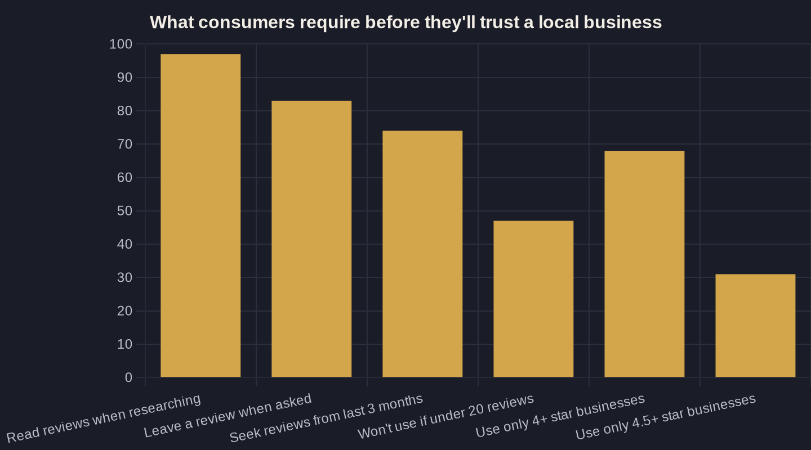

How to Get More Google Reviews (Without Breaking the Rules)
Reviews decide whether your phone rings. Here is the compliant, owner-tested way to get more of them without putting your profile at risk.
Key takeaways
- 97% of prospects read reviews and 47% skip any business under 20 reviews, so your review count gates every lead, not a vanity metric.
- Asking is the whole game: 83% of customers who are asked leave a review, and it is the only fully compliant lever you have.
- Google bans paid reviews and any incentive, whether cash, discounts, or freebies, so the safe play and the effective play are the same: just ask.
- Freshness beats volume: 74% of consumers look for reviews from the last three months, so make asking an every-job habit, not a one-time push.
- Targets that matter: clear 20 reviews, hold 4.5+ stars, and add new reviews every month.
How to Get More Google Reviews: Start With the Math
Before you can figure out how to get more Google reviews, you need to see why they decide whether your phone rings at all. When a prospect searches for a plumber, a clinic, or an HVAC company, your reviews are the first filter they apply, usually before they read a single word you wrote about yourself. 97% of consumers read online reviews when researching a local business, which makes your review count and rating a direct gate on whether anyone ever calls.
The bar has also risen, and it punishes thin profiles quietly. 47% of consumers will not use a business that has fewer than 20 reviews, so a profile with eight reviews loses nearly half its prospects before the conversation starts. On rating, the threshold is just as unforgiving: 31% will only use a business rated 4.5 stars or higher, and 68% require at least four stars.
You never see these losses. There is no missed-call log for the prospect who scrolled past you because a competitor had triple the reviews. That is why reviews belong in the foundation of your Local SEO for Service Businesses: How to Get Found on Google, not in a someday pile. They sit upstream of every lead you pay to generate.
The One Rule That Governs Everything
Here is the rule that governs everything else, and it is worth memorizing before you spend a dollar or send a single request. Google's Maps content policy prohibits reviews that have been paid for directly or in kind, and it bars offering any incentive, including payment, discounts, free goods, or free services, in exchange for a review. That covers the obvious play (buying fake reviews from a service) and the tempting one (a gift-card raffle for anyone who leaves five stars).
The downside of crossing that line is concrete. Google can strip the reviews tied to incentives, and a pattern of violations puts your entire profile, including your hard-earned legitimate reviews, at risk. You can spend months building social proof and lose it in a single sweep.
The good news is that the constraint simplifies your strategy instead of limiting it. Because every shortcut involving money or freebies is prohibited, the only durable, compliant move left is also the most effective one: you ask. That is the boundary every plan for how to get more Google reviews has to respect, and no clever workaround beats it. Everything that follows is built on that single legal lever.
Asking Is the Single Biggest Lever You Have
Asking sounds too basic to be a strategy, which is exactly why most businesses skip it. The data is blunt: 83% of consumers who were asked to leave a review went on to leave one in the past year, making the ask the single biggest lever any business has over its review count. The reviews you are missing are not being refused. No one is requesting them.
So the honest answer to how to get more Google reviews is uncomfortable in its simplicity: ask every satisfied customer, every time, and remove every ounce of friction from following through. Send a direct review link by text the same day the work wraps, while the result is fresh and the goodwill is at its peak. A request a week later, by email, with three clicks to find the right page, converts a fraction as well.
Who asks matters as much as when. The technician who fixed the leak or the front-desk person who watched the patient leave happy carries more weight than an automated message from an address the customer does not recognize. Pair a warm verbal ask at the end of the job with the link that lands seconds later, and you capture the moment goodwill is highest.
Build a Review System, Not a Reminder
A good intention asks sometimes; a system asks every time, whether or not anyone remembers. The real work of how to get more Google reviews is operational, not clever. Pick one trigger that already happens in your workflow, such as job marked complete, invoice paid, or patient checked out, and attach the review request to it so it fires automatically. Then lock down three things: who sends it, exactly what it says, and how the link reaches the customer. A same-day text with a one-tap link beats a printed card, a QR code on an invoice, or an email buried under thirty others.
Freshness is the reason the system never switches off. 74% of consumers specifically seek out reviews written in the last three months, so a steady trickle of new reviews outperforms a large but stale total. Ten reviews this quarter does more for your conversion rate than fifty from two years ago that nobody filters for.
A few guardrails keep the system both effective and clean:
- Ask in person first, then send the link. The verbal ask is what earns the follow-through.
- Use the customer's name and reference the specific job; generic blasts read like spam and convert like it.
- Never filter for who you think will leave five stars. Selectively suppressing unhappy customers (review gating) violates Google's policy and is increasingly easy to detect.
This is the same operating discipline behind Google Business Profile Optimization: The Local Ranking Checklist: small repeatable habits that compound.
| Tactic | Allowed by Google? | Why it lands where it does |
|---|---|---|
| Ask every customer in person, then text a review link | Yes | Simply asking is permitted and is the biggest lever you have |
| Automated same-day request tied to job completion | Yes | Still just asking; no incentive changes hands |
| Discount or coupon for leaving a review | No | Incentives are prohibited, whether cash or in kind |
| Gift-card raffle for reviewers | No | An incentive offered in kind; same rule, same risk |
| Paying a service to post reviews | No | Paid reviews are banned and can trigger removal or suspension |
| Only asking customers you expect to rate you 5 stars | No | Review gating selectively suppresses honest feedback |

Stay on the Right Side of the Line
The line between allowed and prohibited is sharp, and crossing it can erase the reviews you worked months to earn. Use the table below as a quick gut-check before you roll out any review tactic. If a method depends on giving the customer something in return, it is off the table, because Google treats incentives offered in kind exactly the same as cash.
And when a review does land, five stars or one, what you do next matters as much as getting it. A reply signals to both Google and every future reader that a real operator is paying attention, and it is your only legitimate response when a negative review shows up. You cannot delete an honest bad review, but you can answer it well. That is its own skill, and I cover it in How to Respond to Reviews (Especially the Bad Ones).
Turn Reviews Into Booked Jobs
Set targets you can actually manage to, not vague aspirations. Three numbers do the work: clear 20 total reviews so you pass the minimum most prospects require, hold your rating at or above 4.5 stars, and add fresh reviews every month so your recent count never runs dry. Track those three and you will out-position most competitors in your service area without any tricks.
These signals also feed how prominently you appear in the map results. Volume, rating, and recency all influence local ranking, which is why reviews and visibility rise together. If the local three-pack is your goal, this review work compounds directly with everything in How to Rank Higher on Google Maps (the Local 3-Pack).
Here is the Owner's Math: every review is a free, compounding asset that lifts the conversion rate on traffic you already pay for. More reviews mean more of your ad clicks and map impressions turn into booked jobs, at zero additional media cost. That is Owner's Math working quietly in your favor, month after month.
If you want a second set of eyes on the full path from impression to booked job, including where missing or stale reviews are silently costing you leads, that is exactly the kind of thing I trace on a call. I send a short owner-to-owner breakdown like this one every week. The candor is the product, and it is yours if you want it.
Sources
Want this run on your numbers?
Book a call and we will run the Owner's Math on your business — clear numbers, a straight plan, no pitch. Or read the free Playbook first.